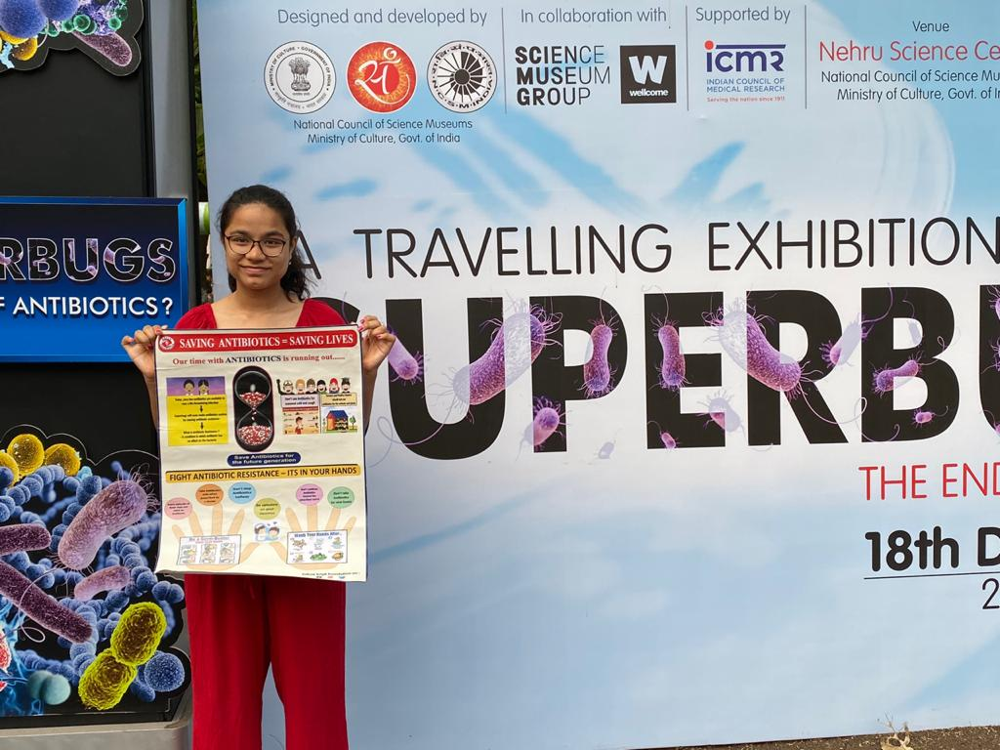

{% extends "layout.html" %}
{% block content %}
Testimonials

"The COVID-19 pandemic has taught us lessons on the impact that infectious and communicable diseases can have on global society and how public
awareness on such issues can help in minimising its rampaging effect.
It is in this context that I am happy to note that one of our young visitors - 14 year old Kriya Shah - had participated
enthusiastically in our Superbugs Exhibition, an international event organised by the Nehru Science Centre last year in association with Science Museum,
London and Wellcome Group, United Kingdom. This exhibition was aimed at spreading awareness about antibiotics and antibiotic resistance.
Kriya had created a poster depicting the work done by her in conducting a survey on Antibiotic awareness and this was well appreciated by all.
I feel more and more young students should take interest in such issues. I wish Kriya all the best for her future endeavours."
- Shivprasad Khened, Director, Nehru Science Centre
"Dissemination of health education and spreading awareness especially amongst the rural population is indeed the need of the hour and I must thank
Kriy8 Foundation to have taken this initiative. Like last year, I would love to be a part of their community service campaigns year after year! "
- Dr. Pranit Kakde, Nephrologist & Kidney Transplant Physician, Amravati, Maharashtra
"Kriy8 Foundation members created a wonderful program on awareness about salt intake for our high school students -the survey form was an eye opener and we all learned a lot -we are hoping the members return with more such enlightening programs in the future."
- Mrs.Poonam, Senior Teacher, St.Francis School, Bhayander
"Adolescent health issues which could be precursors to lifestyle and modifiable diseases often remain unaddressed at the community level.
Efforts of Kriy8 Foundation, conceived by an adolescent- Kriya Shah- stand out in their commitment to pursue this aspect among others.
I congratulate them and wish them good luck in future campaigns."
- Dr.Nayan Chaudhari, Pediatrician, Fellowship in Nephrology (Pune)
"I was delighted to know about the work done by Kriy8 Foundation -especially Kriya -and read their abstract on The Salt Study at the 2019 National Hypertension Conference in Mumbai with great interest- Kudos! Keep up the good work!"
- Dr.Hemant Kulkarni, Chief Pediatric Nephrologist, Royal Perth Hospital, Perth, Australia
{% endblock %}